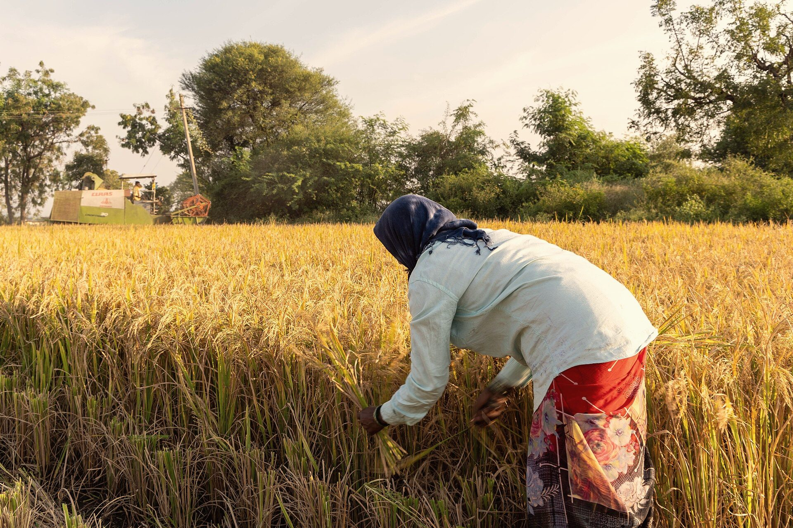
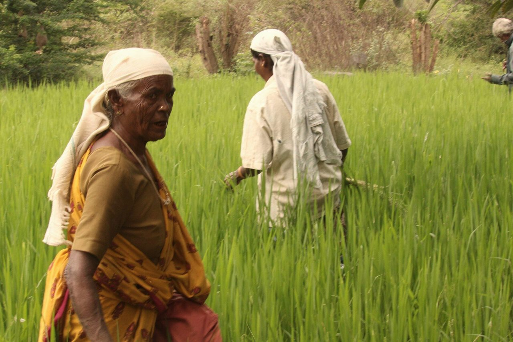
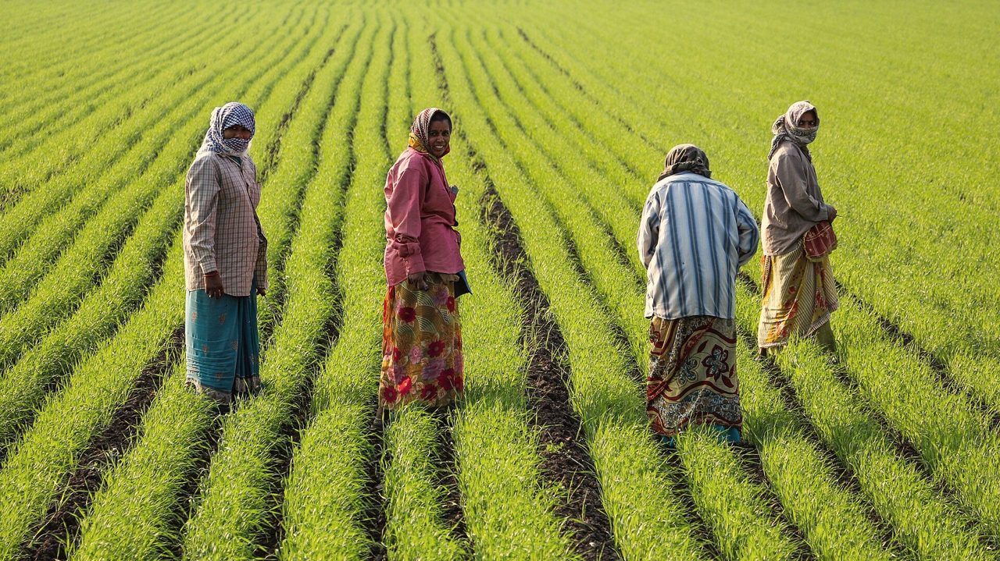
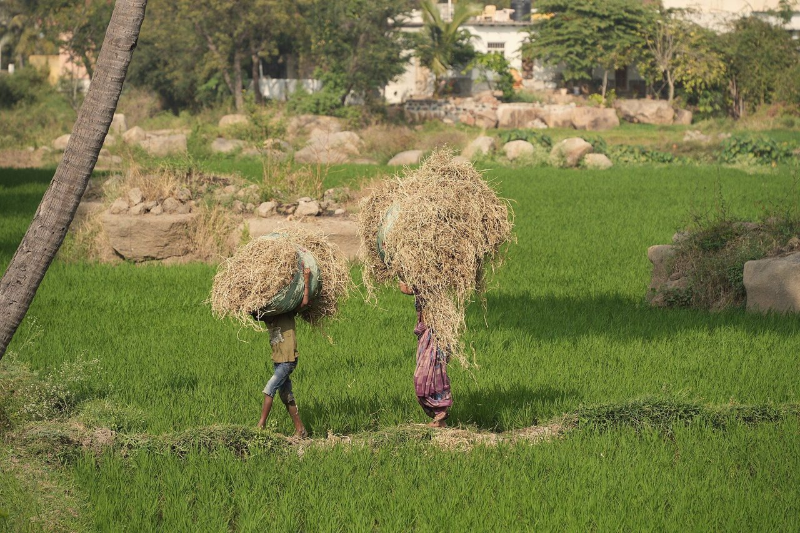
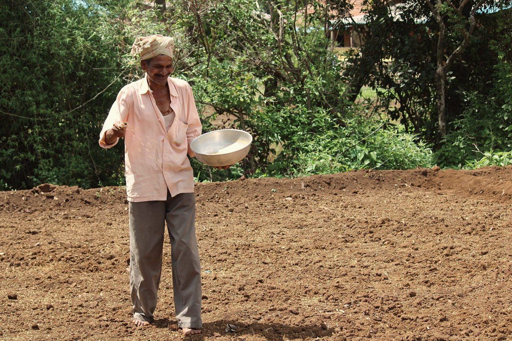

Photo credits
The photographs of rural India on this website come from Wikimedia Commons and are used under Creative Commons licences.

Farmer manually harvesting rice in Raichur, KarnatakaPhoto by Nanditha Gogate, WELL Labs · CC BY-SA 4.0 · Source

Farmer women 2Photo by Vinoth offl · CC BY-SA 4.0 · Source

Women at work, Gujarat (cropped)Photo by Bernard Gagnon · CC BY-SA 3.0 · Source

Ploughing paddy field with oxen, Umaria district, MP, IndiaPhoto by Yann (talk) · CC BY-SA 4.0 · Source

Anegundi - Rice Farmers - 2Photo by Ingo Mehling · CC BY-SA 4.0 · Source

End of Winter. New plantation. Paddy field. Sunset (16527970625)Photo by Abhijit Kar Gupta from Kolkata, India · CC BY 2.0 · Source

Farmer sowing rice in Western Ghat MaharashtraPhoto by Phadke09 · CC BY-SA 4.0 · Source

Rural women and cattle on a village road in RaichurPhoto by Vraj Acharya, WELL Labs · CC BY-SA 4.0 · Source


.jpg){kind=link}


.jpg){kind=link}


Images have been colour graded and resized for this website. Adapted images are shared under the same licence as the original.